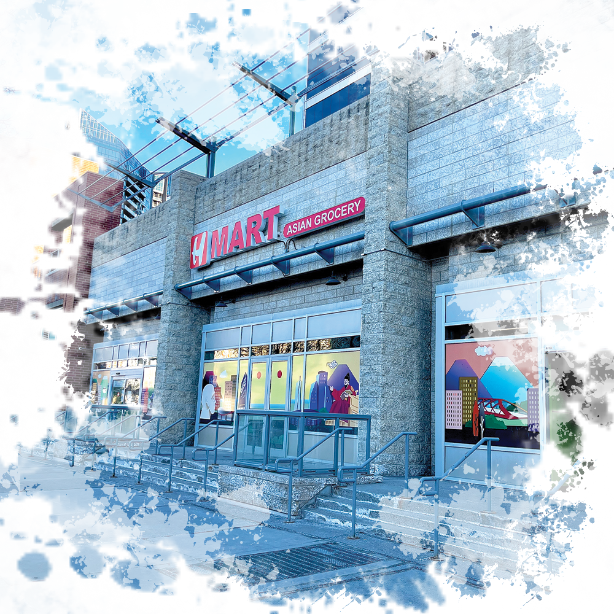

The Moon Cafe
Moon Tea House is my cozy go-to study sanctuary, complete with comfortable seating, a mellow atmosphere, and the enticing aroma of freshly brewed tea. I’m especially hooked on their Hawaiian Light beverage, its bright, refreshing flavors keep me energized during long study sessions, and I never leave without a scoop of their indulgent milk tea ice cream.
Hmart Supermarket
When cravings strike for quick, affordable meals or hard-to-find Asian groceries, Hmart is where I head. From ready-to-eat sushi and comforting Korean dishes to an extensive selection of skincare products, this bustling market has everything I need. It’s no wonder it’s my favorite Asian store in the city; I can easily pick up dinner, snack on the go, and browse new skincare finds all in one visit.
Stampede Park
Just a short distance away, Stampede Park stands as Calgary’s hub for year-round excitement. The venue hosts concerts, sporting events, trade shows, and more, bringing the community together for large-scale gatherings. But the real highlight is every July, when the city comes alive for the Calgary Stampede, a legendary festival celebrating rodeo, live music, carnival attractions, and the warm spirit of Western hospitality.